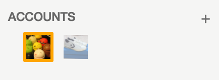
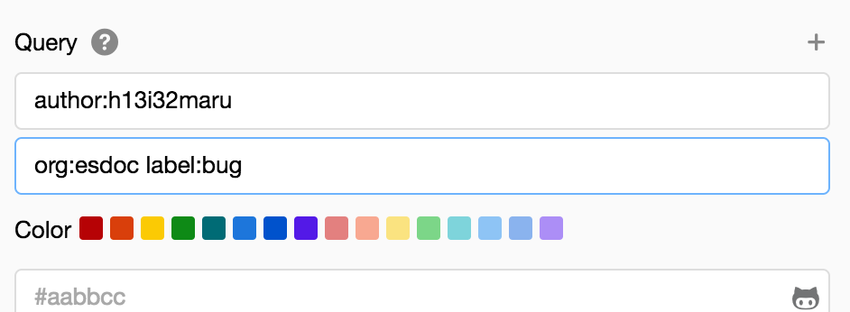
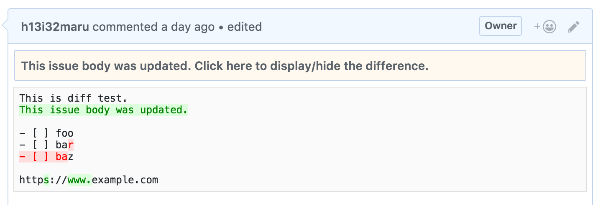

1.0.2
Fix
- Rate limit(v4) is null when GHE has no rate limit settings. @5ca0405
1.0.1
Fix
- Migration database when filter has double-quotes.
1.0.0
Feat
- Add Jump Navigation #157
- New Design #158
- Support draft PR, merged PR #160
- Support involves, review-requested filter #160
- Support suppress self update #161
- Support GitHub Projects #165 #162
- Support reviewers #163
- Support changing stream icon #164
- Support GitHub Notification Sync #166
- Support Dark Mode #167
- Auto expand API polling interval #169
- Support conflict PR #175
Breaking
- Remove import CSS theme feature.
Internal
0.9.3
0.9.2
0.9.1
0.9.0
0.8.0
You will need to login to GitHub again if you use with the built-in browser on Mac.
Mac版の組み込みブラウザを使用している場合、再度GitHubへのログインが必要となります。
Feat
- Always enable dev menu #116
Fix
- Keyboard shortcuts would malfunction when entering comments. #94
- The number of unread issues is broken when the number of saved issues reaches the upper limit @08bcf5c
- Broken layout on github.com @b3d0f9f
Internal
0.7.2
0.7.1
Fix
- Fix broken layout. #85 Thanks Watson1978
0.7.0
Fix
- Removed spinner because saving CPU. @856a8f6
- Fix WatchingStream if we have many watching repositories. #65 Thanks @pocke
- Fix not open outdated comment. @a86f0f9
- Fix display description diff. @2cb49e6
- Fix copy/cut/paste text in browser. @4e7388e
Internal
- Update Electron. #71 Thanks Watson1978
- Update packages. @78159f7
0.6.0
0.5.0
Fix
- A version number in user-agent
- A default path prefix of GitHub API
- Toggle buttons clickable region #48
Internal
- Update Electron to v1.7.11 from v1.6.11(includes security fix CVE-2018-1000006)
0.4.0
Feat
  {kind=link}
{kind=link}
{kind=link}
- Support multi account
- Support multi query at a stream
- Display a difference of issue body
- Preference for always open external URL in external browser
- Save and load streams
- Support custom UI themes with CSS
- Improve a performance of displaying un-read count
Fix
- Using GitHub Enterprise with HTTP
- Accented letter input
Internal
- Update Electron to v1.6.11
0.3.1
Fix
- Notify review comment of pull-requests on GHE
0.3.0
0.2.5
Fix
- Fix a input delaying when post a comment
- Suppress notification from self posting.
- Broken J/K moving (#28)
Internal
- Update Electron to v1.6.1
0.2.4
Feat
- Support some keyboard shortcuts. Click here for details.
- Support to read filtered all issues.
- [experimental] Notify review comment of pull-requests.
- Show a issue number.
Fix
- Broken handling uppercase/lowercase of label, assignee and milestone. (#25)
- Can restart all streams that is workaround of stopping streams. (#21)
- Broken zoom
- Limited width of page when watching split-diff.
Internal
- Update Electron to v1.4.13
0.2.3
Fix
- Can not load the issue via clicking notification
0.2.2
Feat
- Immediately respond to clicking a issue
Fix
- Crash when read old issues that does not have multi assignee
- Display
generate tokenlink at setup view - Handle 404 if we click issues without signed-in
- Crash when clear all data on Windows
- Crash when open selecting dialog
Internal
- Update Electron to v1.4.6
0.2.1
Feat
- Support open external browser with cmd + click
- Display labels, milestone and comment counts in issues pane (#5)
- Filter issues when click attributes of a issue
- Clickable attributes are label, milestone, org, repo, author, assignee, opened/closed, and comment
- Add clear-filter-button
- Support exclusion filter (#6)
- Support preferences of always open outdated comments
- Support new review style comment
Fix
- Broken stream labels when sort those (#14)
- Reset the filter when click a stream
- A stream including
is:opendoes not update closed issues
0.2.0
🙏 Important notice for paid users (English)
The Jasper requires a license key. The users need to migrate to new app from old app.
- A) Paid at Gumroad
- 1. Confirm received email from h13i32maru@gmail.com that reference to the license.
- 2. Please gets license key with written the way in the email.
- 3. Download new Jasper and register the license key.
- B) Paid at Mac App Store
- 1. Please send the screen-shot of Mac App Store Purchased tab(including Jasper icon) to h13i32maru+jasper_license@gmail.com
- 2. Please gets license key with written the way on reply.
- 3. Download new Jasper and register the license key.
If you have any questions, please contact h13i32maru@gmail.com.
Thanks using Jasper.
🙏 購入済みユーザ様への重要なお知らせ(日本語)
Jasperを使用するためにはライセンスキーが必要となりました。 古いアプリを購入済みのユーザ様は新しいアプリへの移行が必要となります。
- A) Gumroadで購入した場合
- 1. ライセンスに関するメールがh13i32maru@gmail.comから届いていることをご確認ください
- 2. そのメールに書かれた手順でライセンスキーの取得を行ってください
- 3. 新しいJasperをダウンロードし、ライセンスキーをJasperに登録してください
- B) Mac App Storeで購入した場合
- 1. Mac App Storeの購入済みタブのスクリーンショット(Jasperのアイコンを含む)をh13i32maru+jasper_license@gmail.comまで送信してください
- 2. 返信されたメールに書かれた手順でライセンスキーの取得を行ってください
- 3. 新しいJasperをダウンロードし、ライセンスキーを登録してください
ご不明な点がればh13i32maru@gmail.comまでご連絡ください。
Jasperをご利用いただきありがとうございます。
Feat
- Support Linux
- Support screen zoom +/- (#8)
- Create a PR stream when initialize
Fix
- Can not immediately quit
- Freeze when selecting item link clicked (#19)
- Crash if you try to open a file (#17)
- Broken style of built-in browser
Internal
- Update Electron to v1.4.2
0.1.2
0.1.1
First Release!